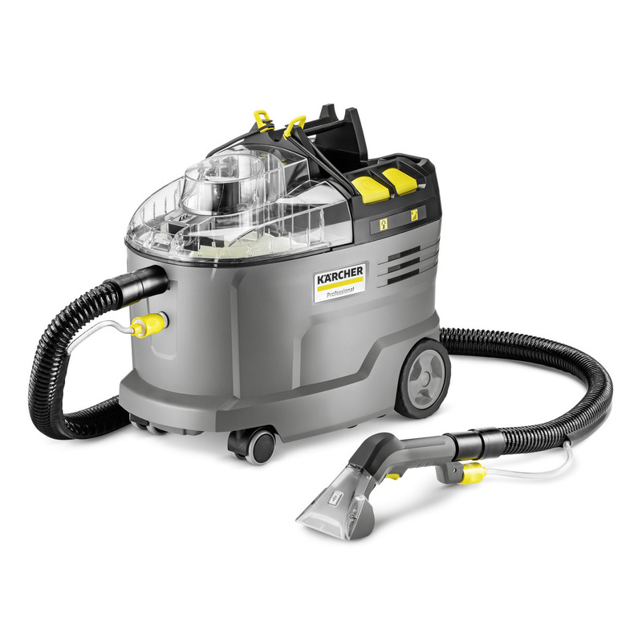
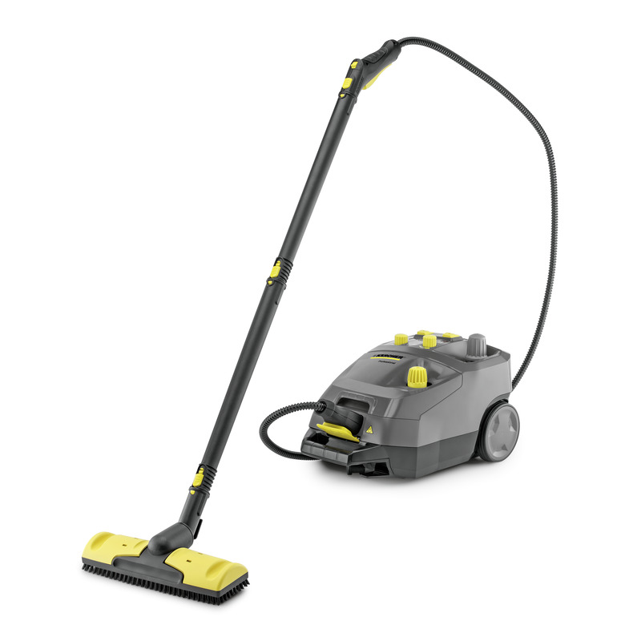
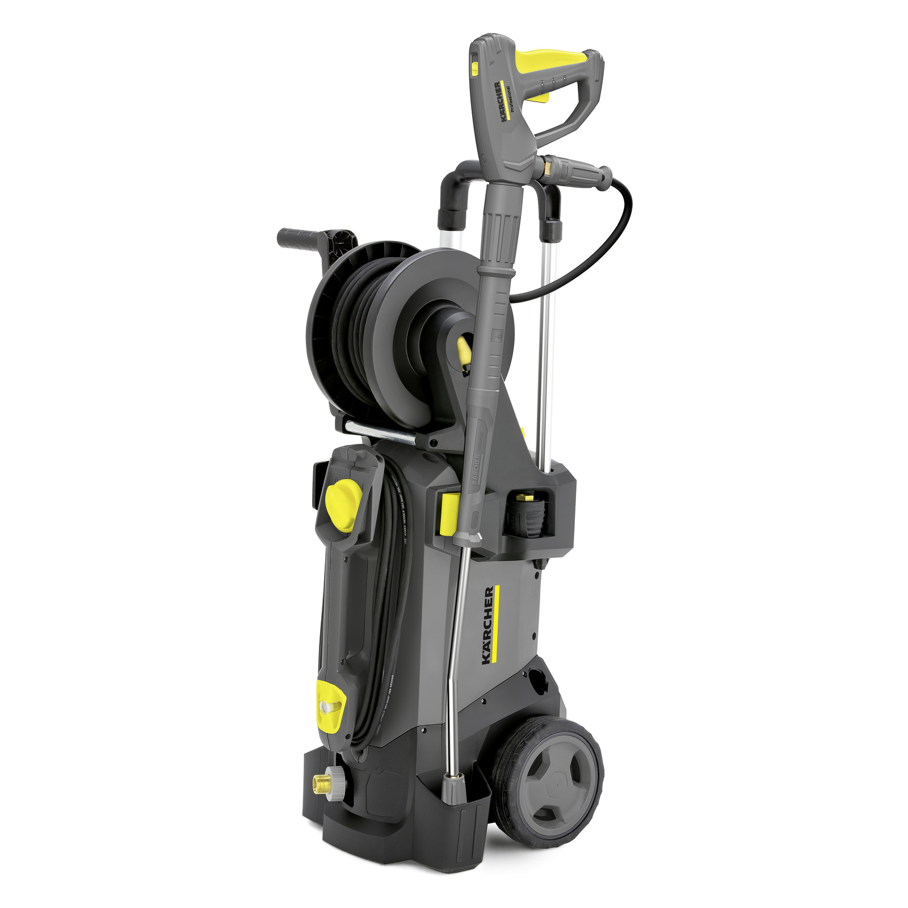

01 — Textile
Kärcher Puzzi 8/1
Shampouineuse injection/extraction — textiles d’ameublement et moquettes.
noindex.Catalogue
Parc actuel, sans filtre gadget ni faux stock. Chaque fiche détaille le kit, les prérequis et les consignes utiles. Les modèles Puzzi 9/1 Bp, SG 4/4 et HD 5/17 CX Plus restent sous réserve de confirmation de plaque.
Caution 100 CHF · Twint ou espèces · Lausanne sur rendez-vous · tarifs indicatifs
01 — Textile
Shampouineuse injection/extraction — textiles d’ameublement et moquettes.

02 — Textile
Shampouineuse injection/extraction à batterie — variante du parc textile.


04 — Haute pression
Haute pression eau froide — terrasses, sols extérieurs, véhicules.
Ce catalogue ne liste que le matériel réellement proposé à la location sur ce site. D’autres équipements éventuels ne sont pas présentés comme disponibles.